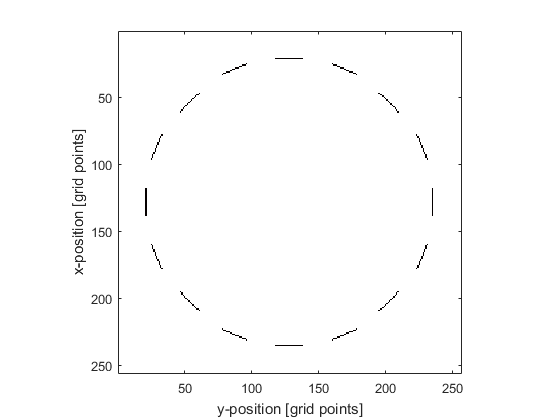

makeMultiArc
Create a binary map of multiple arcs within a 2D grid.
Syntax
[arcs, arcs_labelled] = makeMultiArc(grid_size, arc_pos, radius, diameter, focus_pos) [arcs, arcs_labelled] = makeMultiArc(grid_size, arc_pos, radius, diameter, focus_pos, ...)
Description
makeMultiArc creates a binary map of multiple arcs within a two-dimensional grid using makeArc. The position of the arcs is denoted by 1's in the matrix with 0's elsewhere. A labelled matrix can also be returned, where the position of the first arc is denoted by 1's, the position of the second arc by 2's, and so on.
Examples
% define grid parameters x_size = 300e-3; Nx = 256; dx = x_size / Nx; grid_size = [Nx, Nx]; % create a Cartesian circle with the x, y positions of the arcs circle_radius = 125e-3; num_arcs = 16; arc_pos = makeCartCircle(circle_radius, num_arcs, [1, 1] * x_size / 2).'; % convert the Cartesian arc positions to grid points arc_pos = round(arc_pos/dx); % define element parameters radius = round(x_size / (2 * dx)); diameter = 21; focus_pos = [1, 1] * Nx/2; % create arcs makeMultiArc(grid_size, arc_pos, radius, diameter, focus_pos, 'Plot', true);
Inputs
grid_size |
size of the 2D grid given as a two element vector [Nx, Ny] [grid points] |
arc_pos |
midpoint of each arc given as a matrix of dimensions N x 2, with each row specifying the midpoint of each arc as a two element vector [ax, ay] [grid points] |
radius |
radius of curvature of each arc given as either a single number (if the arcs have the same radius), or an N-element vector containing the radius for each arc [grid points] |
diameter |
diameter of each arc (length of straight line between the end points) given as either a single number (if the arcs have the same diameter), or an N-element vector containing the diameter for each arc [grid points] |
focus_pos |
any point on the beam axis of the arc given as either a two element vector (if the arcs have the same focus_pos), or as a matrix of dimensions N x 2, with each row specifying the focus_pos for each arc given as a two element vector [fx, fy] [grid points] |
Optional Inputs
Optional 'string', value pairs that may be used to modify the default computational settings.
| Input | Valid Settings | Default | Description |
|---|---|---|---|
'Plot' |
(Boolean scalar) | false |
Boolean controlling whether the arc array is plotted using imagesc. |
Outputs
arc |
2D binary map of an arc |
arcs_labelled |
2D labelled matrix of arcs |
See Also
makeArc, makeMultiBowl